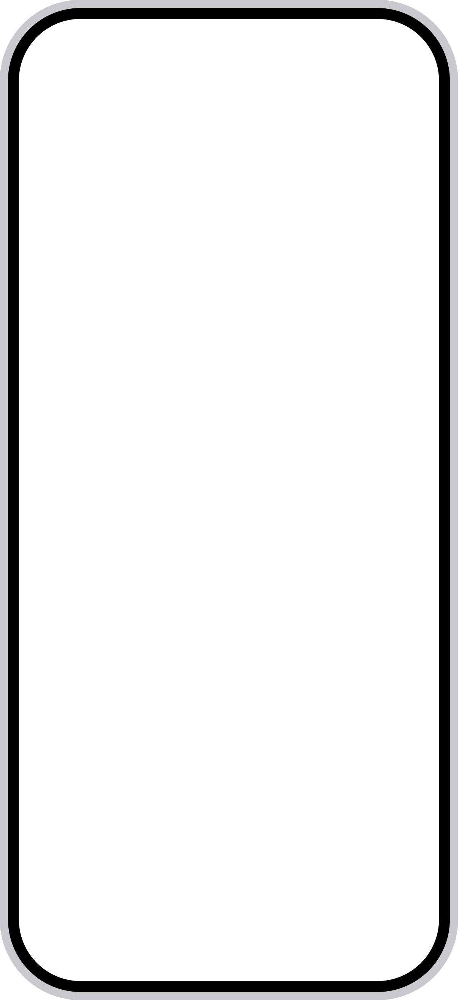

MyStarland
Ordinary moments disappear,
Give them somewhere to stay.
Write down a moment. Starland gives it a place to belong.
Want to try?Feel free to find me Want to try?
Feel free to find me SHUKUINAN
Write a moment. Watch it become an island.
It first becomes a colored memory orb.
The color is how it felt. The island is what it was about.

Every part of life finds its own island.
The more you record, the more the island gradually becomes richer.
Daily Life
Ordinary moments that still feel worth keeping.
Your memories stay yours.
Memory analysis happens on your device first.
Starland doesn’t rely on ads, and doesn’t sell your personal data.
A quiet place for your memories.
A small memory, a growing island, a world of your own.
Start building your Starland.
Want to try?Feel free to find me Want to try?
Feel free to find me SHUKUINAN
Available on iPhone · Scan to find me on X
A few things you might want to know.
What is Starland?
Starland is a personal memory app where the moments you record slowly become islands.
Do I need to organize my memories myself?
No. Just write down the moment. Starland helps each memory find a place to belong.
Is my data private?
Memory analysis happens on your device first. Starland doesn’t rely on ads, and doesn’t sell your personal data.
Can I look back at old memories?
Yes. You can revisit memories through your timeline, islands, and memory review features.
Which devices does Starland support?
Starland is currently available on iPhone.